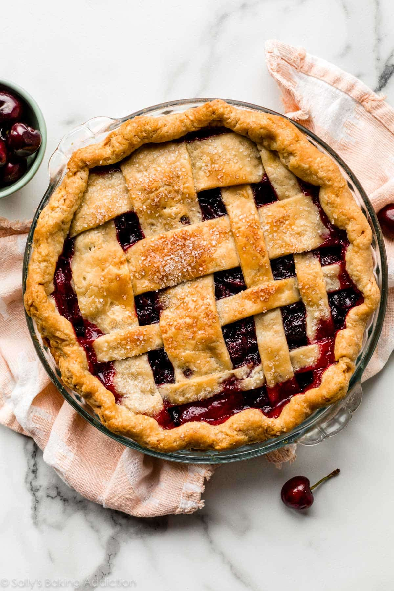

Skip image
Cherry Pie

"Diane, if you ever get up this way, that cherry pie is worth a stop." - Agent Dale Cooper
Indulge in the delightful flavors of Twin Peaks with our irresistible Cherry Pie recipe. This classic dessert pays homage to the iconic television series, combining a buttery, flaky crust with a luscious filling bursting with sweet cherries. Baked to perfection, each slice reveals a vibrant ruby-red filling oozing with juicy goodness. Whether you're a fan of the show or simply a cherry pie enthusiast, this recipe is sure to transport you to the mysterious and enchanting world of Twin Peaks with every delectable bite.
Ingredients:
- 2 ½ cups all-purpose flour
- 1 teaspoon salt
- 1 cup unsalted butter (cold and cubed)
- 6-8 tablespoons ice water
- 5 cups fresh or frozen cherries (pitted)
- 1 cup granulated sugar
- ¼ cup cornstarch
- 1 tablespoon lemon juice
- ½ teaspoon almond extract (optional)
- 1 tablespoon unsalted butter (cut into small pieces)
- 1 egg
- 1 tablespoon milk or water
- powdered sugar (optional garnish)
Steps:
- Preheat your oven to 425°F (220°C).
- Prepare the crust: In a mixing bowl, combine the all-purpose flour and salt. Add the cold, cubed unsalted butter to the bowl. Use a pastry cutter or your fingers to cut the butter into the flour mixture until it resembles coarse crumbs. Gradually add the ice water, one tablespoon at a time, and mix until the dough starts to come together. Divide the dough in half and form two discs. Wrap each disc in plastic wrap and refrigerate for at least 30 minutes.
- Prepare the filling: In a large bowl, combine the pitted cherries, granulated sugar, cornstarch, lemon juice, and almond extract (if using). Mix well until the cherries are evenly coated.
- Roll out the dough: On a lightly floured surface, roll out one disc of the chilled dough into a circle slightly larger than your pie dish. Carefully transfer the rolled-out dough to the pie dish and gently press it into the bottom and sides. Trim any excess dough hanging over the edges.
- Add the filling: Pour the cherry filling into the prepared pie crust. Spread it evenly.
- Dot with butter: Cut the tablespoon of unsalted butter into small pieces and scatter them on top of the cherry filling.
- Roll out the second crust: Roll out the second disc of chilled dough into a circle.
- Create a lattice top or a full crust: You can either create a lattice top by cutting the rolled-out dough into strips and weaving them over the filling, or you can place the entire rolled-out crust on top of the filling and cut slits to allow steam to escape.
- Seal and crimp the edges: Use your fingers or a fork to seal and crimp the edges of the pie crust together.
- Brush with egg wash: In a small bowl, beat the egg with milk or water to create an egg wash. Brush the top crust of the pie with the egg wash. This will give it a golden color when baked.
- Bake the pie: Place the pie on a baking sheet to catch any drips. Bake in the preheated oven for about 45-50 minutes, or until the crust is golden brown and the filling is bubbling.
- Cool and serve: Allow the cherry pie to cool for at least 2 hours before serving. This will help the filling set. Optionally, dust the top of the pie with powdered sugar for a finishing touch.
- Enjoy your homemade cherry pie!
Return to Main Page
Go to top